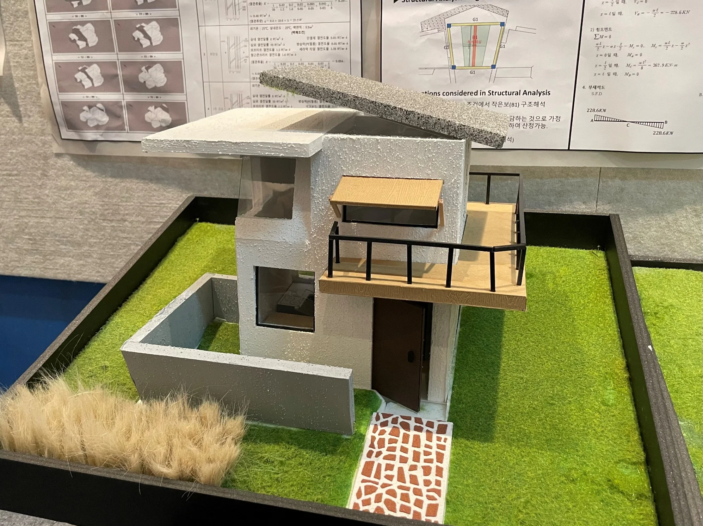

3 × 3 HOUSE OF MY OWN
Closed but Open
밖으로는 사생활을 지키고, 안으로는 빛과 풍경에 열리는 나를 위한 작은 집을 설계했습니다.
- YEAR / SEMESTER
- 2학년 1학기 · 2022
- PROJECT TYPE
- 소형 주택
- CONTRIBUTION
- 개인 설계
- SITE / SUBJECT
- 제주 산굼부리 일대 · 설계 대상지

THE IDEA
생각의 출발점
외부의 시선에서 자유로우면서도 내부에서는 답답하지 않은 집을 생각했습니다. 마스크가 감싸는 방식에서 개념을 얻고, 빛과 풍경을 선택적으로 받아들이는 창과 발코니를 계획했습니다.
- 01
나를 위한 집
생활 방식과 취미에서 공간의 요구를 찾았습니다.
- 02
닫힘과 열림
외부의 시선을 조절하면서 다양한 방향의 풍경과 빛을 받아들이도록 구상했습니다.
- 03
작은 공간의 층위
생활 공간과 수면 공간을 나누고, 발코니와 높이 차로 공간의 변화를 만들었습니다.
PROCESS & OUTCOME
과정과 결과
사진을 누르면 크게 볼 수 있습니다.